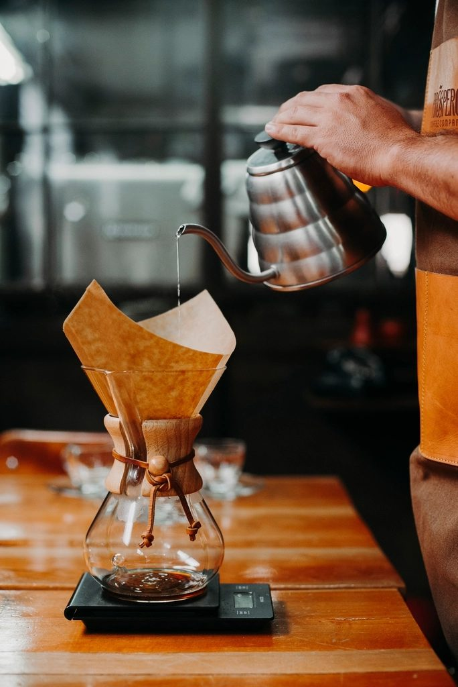

Our story
A small café with a big garden
ร้านเล็กๆ ที่มีสวนให้นั่งพัก
Nok Noi means "little bird". We roast in small batches, bake every morning and keep the menu short so everything is fresh. Bring a book, bring your laptop or just bring your friends.
เราคั่วกาแฟเองทีละน้อย อบขนมทุกเช้า และตั้งใจทำทุกแก้วให้ดีที่สุด